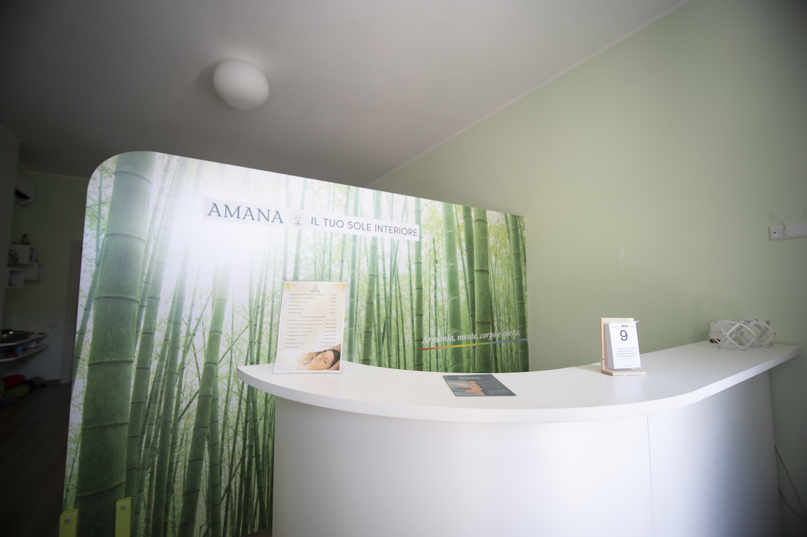

Ogni persona custodisce dentro di sé una luce. Una luce che può essere percepita, ascoltata e riscoperta. Quando guardo il sole ne sento la bellezza, la luce, il calore. So che è lì, anche quando il cielo cambia. Allo stesso modo, credo che dentro ogni persona esista un sole interiore: una parte autentica, vitale e luminosa che continua a esserci, anche nei momenti in cui facciamo più fatica a sentirla.

Francesca Schiralli
AMANA
Il tuo sole interiore"Amana nasce da questa visione. Uno spazio in cui fermarsi, ascoltarsi e concedersi il tempo di incontrare ciò che vive dentro di noi."
La strada che mi ha portata fin qui
Il Mio Cammino
Ci sono percorsi che non si scelgono tutti in una volta. Si incontrano persone, si attraversano esperienze, si fanno scoperte, si cambiano direzioni. E, passo dopo passo, ci si avvicina sempre di più a ciò che ci appartiene.
Per molto tempo ho cercato fuori di me risposte, significati e direzioni. Poi ho iniziato a comprendere che molte delle risposte che cercavo erano già dentro di me. È iniziato così il mio incontro con il corpo, il respiro e l'energia.

La Mia Storia
Ogni esperienza ha lasciato qualcosa
Il mio percorso personale e professionale è fatto di esperienze, incontri, cambiamenti e anche momenti che hanno avuto bisogno di tempo per essere compresi.
Nel tempo ho imparato ad ascoltare maggiormente ciò che accade dentro di me e, proprio attraverso questo ascolto, ho iniziato a guardare le persone in modo diverso. Quando incontro qualcuno, la mia attenzione non si ferma a ciò che mostra. Mi incuriosisce ciò che c'è oltre.
Un movimento, un respiro, uno sguardo, una tensione, una pausa, una parola, un silenzio. Mi chiedo cosa stia vivendo quella persona, cosa stia chiedendo il suo corpo, cosa sia pronta a riconoscere. È questa curiosità, unita al rispetto, che ancora oggi accompagna il mio lavoro.
La Mia Visione
Vedere la persona nella sua interezza
Credo che ogni persona custodisca dentro di sé una luce. A volte è evidente, altre volte rimane più nascosta. Ma io credo che ci sia. Forse è proprio per questo che sono sempre stata affascinata dalle persone: mi piace osservare, ascoltare e cercare quella bellezza che magari in quel momento la persona stessa fa fatica a vedere.
"Ho imparato anche su di me quanto possa cambiare il modo in cui ci guardiamo. Per molto tempo ho fatto fatica a riconoscere la mia bellezza, dentro e fuori. Oggi mi amo e mi accetto molto di più e so che questo amore può continuare a crescere."
Da questa esperienza nasce anche il mio modo di incontrare gli altri. Non cerco una perfezione da raggiungere. Cerco la persona. La sua unicità, le sue caratteristiche, le sue risorse, ciò che sta vivendo in quel momento.
L'ascolto viene prima di tutto. E ascoltare, per me, significa molto più che ascoltare le parole. È un ascolto che comprende il linguaggio verbale e quello non verbale, il corpo, il respiro, i movimenti, le sensazioni e ciò che emerge anche nel silenzio.
Durante un trattamento mi metto in ascolto senza decidere in anticipo cosa cercare. Se emerge una tensione, la osservo. Se emerge un'emozione, la accolgo. Se emerge leggerezza, la seguo. Se emerge una parte più fragile, le do spazio. Resto aperta a ciò che la persona mi mostra in quel momento.
"Sono qui per te. Aiutami ad aiutarti."

La Mia Missione
Creare uno spazio in cui sentirsi accolti
Il mio lavoro nasce dal desiderio di accompagnare le persone verso un maggiore benessere, attraverso l'ascolto, la presenza e il contatto.
Non credo in un percorso uguale per tutti. Ogni persona arriva con la propria storia, il proprio corpo, il proprio momento e le proprie risorse. Per questo il mio compito è prima di tutto ascoltare e creare uno spazio.
Uno spazio nel quale la persona possa fermarsi, respirare, percepirsi e incontrare ciò che è pronta ad ascoltare. A volte il corpo chiede movimento. A volte contatto. A volte silenzio. A volte respiro. A volte semplicemente uno spazio nel quale sentirsi accolti.
Io sono lì per accompagnare questo incontro. Con ascolto, presenza e rispetto. Perché il mio desiderio è che ogni persona possa uscire da quell'incontro portando con sé qualcosa: più leggerezza, maggiore consapevolezza, una nuova sensazione o semplicemente un po' più di spazio dentro di sé.
Formazione e Ricerca
Continuare a imparare fa parte del mio cammino
La mia formazione non è mai stata un punto di arrivo. È una ricerca che continua. Nel tempo ho incontrato discipline diverse, ho studiato il corpo, il respiro, il rilassamento, il mondo delle energie e diverse modalità di ascolto e di contatto.
Il Reiki e l'Energia
Il Reiki è stato uno dei primi incontri importanti con l'energia. Sono diventata Master Reiki, ma la mia ricerca non si è fermata lì. Ho continuato a studiare e ad approfondire, perché l'energia continua ad affascinarmi e sento che ci sono ancora moltissimi aspetti da conoscere.
Il Craniosacrale
Anche il craniosacrale occupa un posto speciale nel mio percorso. La formazione e la pratica mi hanno insegnato ad affinare sempre di più la capacità di ascoltare il corpo attraverso il contatto e la percezione profonda dei suoi ritmi.
Continuo a formarmi perché ogni nuova conoscenza modifica anche il mio modo di osservare. Più imparo, più mi accorgo di quanto ci sia ancora da scoprire. Ed è proprio questo che amo della ricerca. Non arrivare a una risposta definitiva, ma continuare a fare domande, ascoltare, sperimentare e crescere.
Oggi
Il cammino confluisce in Amana
Oggi tutto questo confluisce in Amana. Un luogo nato dalla mia storia, dalla mia ricerca e dal desiderio di condividere ciò che ho incontrato lungo il cammino.
Corpo, respiro ed energia sono tre fili che attraversano il mio lavoro. Attraverso i trattamenti, i percorsi e le attività, cerco ogni volta di incontrare la persona che ho davanti, lasciando che sia quell'incontro a indicare la direzione. Perché ogni persona è diversa. E ogni incontro può rivelare qualcosa di nuovo.
Il mio cammino continua. E forse è proprio questo il senso più bello del camminare:
"Continuare a scoprire chi siamo, mentre impariamo ad ascoltarci."
Trattamenti & Massaggi
Scegli il tuo momento di ascolto
Trattamento

Trattamento Craniosacrale e Rilascio Emozionale
Durata: 60 min | Prezzo: 70 €
Un ascolto profondo del corpo, attraverso il contatto, la presenza e il rispetto dei suoi tempi. Il Trattamento Craniosacrale è una metodica manuale delicata che ascolta i ritmi profondi dell'organismo e del sistema fasciale, favorendo il rilascio delle tensioni e la riconnessione interiore.
Un tempo per te

Massaggio Rilassante
Durata: 60 min | Prezzo: 60 €
Un contatto amorevole con il corpo, per rallentare, respirare e lasciare andare. Un massaggio con olio su tutto il corpo, eseguito con movimenti fluidi e continui, personalizzato senza schemi rigidi per adattarsi a te e a ciò che il tuo corpo comunica in quel momento.
Un tempo da vivere insieme

Massaggio di Coppia
Durata: 60 min | Prezzo: 120 €
Un tempo da vivere insieme per rallentare, respirare e ritrovarsi. Nella vita di tutti i giorni è facile prendersi cura di tutto… tranne che della relazione. Un'occasione per fermarsi, condividere benessere e ritrovare la vicinanza.
Corpo · Respiro · Energia

FRAM
Durata: 75 min | Prezzo: 75 €
Un trattamento diverso dal solito, pensato per chi sente il desiderio di partecipare attivamente al proprio percorso. FRAM nasce dall'incontro tra corpo, respiro ed energia, guidando gradualmente dalla fase dinamica verso uno spazio profondo di ascolto e quiete.
Oltre lo spazio

Trattamenti a Distanza
Durata: 50 min | Prezzo: 50 €
La presenza può andare oltre la distanza fisica. Un'esperienza di sintonizzazione e riequilibrio energetico basata su ascolto, intenzione e presenza, vissuta comodamente nel proprio spazio.
Spazio Condiviso
Le Attività

Conoscerla, sentirla, imparare a viverla
Energia
L'energia fa già parte della nostra vita. La utilizziamo ogni giorno. Possiamo iniziare imparando a riconoscere e sentire la nostra.
La mia ricerca
L'energia mi affascina da sempre. È una ricerca che continua ad accompagnarmi e che ancora oggi sento profondamente viva dentro di me. Più studio, più sperimento e più mi rendo conto di quanto ci sia ancora da conoscere.
Il mio percorso è iniziato con il Reiki, incontrando per la prima volta l'energia in modo consapevole. Sono diventata Master Reiki, ma la mia ricerca si è allargata, lasciandomi guidare dalla curiosità e dal desiderio di comprendere sempre più profondamente ciò che non sempre possiamo vedere, ma che possiamo imparare a percepire.
L'energia fa già parte di noi
Non è qualcosa che appartiene a pochi. Tutti noi viviamo, utilizziamo e scambiamo energia ogni giorno, nel modo in cui respiriamo, ci muoviamo e viviamo le relazioni.
Prima di imparare a utilizzarla, possiamo imparare a sentirla. Riconoscere le nostre sensazioni è già un primo modo per entrarci in relazione.
Un percorso che continua
Non sento di essere arrivata a una risposta definitiva. Più conosco, più aumenta la mia curiosità. Per questo continuo a esplorare: l'energia per me è uno spazio di possibilità e ricerca continua.
Percorsi Individuali e di Gruppo
Questa ricerca può essere vissuta attraverso percorsi personalizzati:
- Individuale: Uno spazio dedicato esclusivamente a te, costruito in modo personalizzato sulle tue esigenze.
- Di gruppo: Un'esperienza condivisa in cui ascolto, pratica e confronto arricchiscono il cammino.
Tornare al corpo e allo spazio di quiete
Movimento e Respiro
Ci sono momenti in cui fermarsi e meditare sembra difficile. La mente corre, il corpo è contratto e trovare uno spazio di calma può sembrare lontano. Per questo Movimento e Respiro nasce dal corpo.
È un incontro settimanale nel quale iniziamo con il movimento, per sciogliere, ascoltare e ritrovare gradualmente una maggiore presenza. Non è necessario saper fare stretching e non ci sono movimenti perfetti. Partiamo dall'ascolto.
Il movimento prepara.
Il respiro accompagna.
La visualizzazione porta dentro.
Poi rallentiamo. Il movimento lascia spazio al respiro, fino ad arrivare alla parte di visualizzazione guidata. Ogni volta propongo una visualizzazione diversa, spesso ispirata alla natura, alle stagioni o a ciò che percepisco nel gruppo.
Attraverso il respiro e l'immaginazione possiamo creare uno spazio interiore nuovo, nel quale sperimentare sensazioni di calma e sicurezza. Un'ora per rallentare, ascoltarti e concederti uno spazio tutto tuo. Un incontro semplice e accessibile, una volta a settimana, per tornare a te.
Fermarsi. Respirare. Lasciare spazio.
Meditazione
Meditare, per me, significa prima di tutto rallentare. Fermarsi per qualche momento dal ritmo quotidiano, lasciare che i pensieri si facciano più silenziosi e tornare ad ascoltare ciò che accade dentro di noi.
Per noi occidentali, però, fermare la mente e rimanere semplicemente presenti non è sempre così naturale. Per questo amo esplorare la meditazione attraverso modalità diverse: dalla meditazione dinamica alla meditazione silenziosa, dalla visualizzazione guidata alla meditazione attraverso la candela.
"La meditazione non è un modo per diventare qualcun altro. È uno spazio per tornare, anche solo per qualche momento, a sentire se stessi."
Perché non esiste una meditazione uguale per tutti. C'è chi trova il proprio spazio nel silenzio, chi ha bisogno prima di muovere il corpo, chi si lascia accompagnare dalle immagini, dal respiro, da una musica o semplicemente dalla presenza. L'obiettivo è offrire possibilità diverse, affinché ognuno possa incontrare la modalità che sente più vicina a sé.
E quando meditiamo insieme accade qualcosa di speciale. Il gruppo crea una presenza condivisa. Ci si siede, si respira, si rallenta insieme e, per un tempo, si lascia fuori il rumore del quotidiano. Gli incontri vengono proposti periodicamente e possono assumere forme diverse, sempre con la libertà di sperimentare e trovare ciò che più ti appartiene.
Inizia il Tuo Percorso
Prendiamoci un tempo per parlare
Se desideri ricevere informazioni sui trattamenti, concordare un appuntamento o semplicemente rivolgermi una domanda, compila il modulo o utilizza i recapiti sottostanti.
Contatto Diretto
Francesca Schiralli
info@amana-soleinteriore.it
San Giuliano Milanese, MI